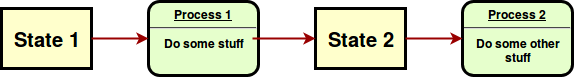

Concurrency in evolutionary algorithms
@jjmerelo

By Andrew Bertram - World66, CC BY-SA 1.0, Link
Moore's law is over
GPUs are expensive
And take a lot of energy
Leverage what you actually have
Improvements in software and hardware architecture rule
共に: concurrency: flowing together
Processing takes place in overlapping time periods.
Using all logical cores
Use concurrent languages
Perl 6, Go, Julia, Scala
Erlang
Autothreading
indi = random_chromosome(len)
rr = @distributed (+) for j in [indi[n:n+3] for n=1:3:length(indi)-3]
value = reduce(+, j )
if value == 0 || value == 4
1
else
0
end
end
There's a right level of parallelism
fitness = @distributed for i in 0:1:number
indi = random_chromosome(length)
reduce( +, indi)
end
# Run with julia -p 4 code/parallel-evaluation.jl
Auto-parallelism in DEAP using SCOOP
from scoop import futures
toolbox.register("map", futures.map)
Use well-arranged data
Functional programming rocks
Learn map/reduce
say [+] Bool.pick xx 65536 ==> map( *.so ); say (Bool.pick xx 65536).rotor(4).map( ! (0 < *.sum < 4) ).sum;Juan Julián Merelo Guervós, José Mario García Valdez: Going Stateless in Concurrent Evolutionary Algorithms. WEA (1) 2018: 17-29
Initial exploration of autothreading
There's a better way to do it
Sequential processes communicate
Process writes to/read from channels
But they don't share state
Stateless⇒ 1 to 1 mapping input/output
For all functions.
State is processed, not mutated
Separates code from data
Decouples state and computation
Processing in streams
You can always go stateless
Put all state into arguments
That's almost never practical
Or efficient
And functionally equivalent to stateful
Change the paradigm
to go stateless
Evolutionary algorithms in Perl six
Perl 6 is a concurrent
Functional
JIT-compiled language
進化
Evolutionary algorithms evolve codified solutions
sub random-chromosome( UInt $length --> List(Seq) )
is export {
return Bool.pick() xx $length;
}
... in populations ...
sub initialize( UInt :$size,
UInt :$genome-length --> Array ) is export {
my @initial-population;
for 1..$size -> $p {
@initial-population.push:
random-chromosome( $genome-length );
}
return @initial-population;
}... through evaluation...
multi sub evaluate( :@population,
:%fitness-of,
:$evaluator --> Mix ) is export {
my MixHash $pop-bag;
for @population -> $p {
if ! %fitness-of{$p}.defined {
%fitness-of{$p} = $evaluator( $p );
}
$pop-bag{$p} = %fitness-of{$p};
}
return $pop-bag.Mix;
}... to select the best
sub get-pool-roulette-wheel( Mix $population,
UInt $need = $population.elems ) is export {
return $population.roll: $need;
}... and interchange bits ...
my $length = @chromosome1.elems;
my $xover1 = (^($length-2)).pick;
my $xover2 = ($xover1^..^$length).pick;
my @x-chromosome = @chromosome2;
my @þone = $xover1..$xover2; # crosover zone
@chromosome2[@þone] = @chromosome1[@þone];
@chromosome1[@þone] = @x-chromosome[@þone];
return [@chromosome1,@chromosome2];... which mutate ...
sub mutation ( @chromosome is copy --> List ) is export {
my $pick = (^@chromosome.elems).pick;
@chromosome[ $pick ] = !@chromosome[ $pick ];
return @chromosome;
}Repeat until solution is found
Evolutionary algorithms are not stateless
Generation-level functions.
Selection takes 1 population ⇒ produces 1
Bigger problem
Mixing populations
Let's de-state-ify evolutionary algorithms
How do we do that
With Perl 6?
Perl 6 offers channel based concurrency
my Channel $c .= new;
my Channel $c2 = $c.Supply.batch( elems => 2).Channel;
my Channel $output .= new;
my $count = 0;
$c.send(1) for ^2;my $more-work = start react whenever $c2 -> @item {
if ( $count++ < 32 ) {
$c.send( @item[1]);
my $sum = sum @item;
$c.send( $sum );
$output.send( $sum );
} else {
$c.close;
}
}
await $more-work;
Channels in Julia
n = 32
c1 = Channel(n)
for _ in 1:n
put!(c1,"foo")
end
for _ in 1:n # Reads from channel
data = take!(c1)
println(data)
end
Challenge: design a stateless EA with channels
Connecting to channel evaluation
my @evaluation = ( start react whenever $raw -> $one {
my $with-fitness = $one => max-ones($one);
$output.send( $with-fitness );
$evaluated.send( $with-fitness); # Check for solution and stuff
} ) for ^$threads;
Channel reproduction, broadcasting from...
my $selection = ( start react whenever $channel-three -> @tournament {
my @ranked = @tournament.sort( { .values } ).reverse;
$evaluated.send( $_ ) for @ranked[0..1];
my @crossed = crossover(@ranked[0].key,@ranked[1].key);
$raw.send( $_.list ) for @crossed.map: { mutation($^þ)};
} ) for ^($threads/2);
Start here
Go stateless
Go parallel
Other levels are possible
my $single = ( start react whenever $channel-one -> $crew {
# Get values and ...
while $count++ < $generations && best-fitness($population) < $length {
LAST {
if best-fitness($population) >= $length {
$channel-one.close;
} else {
$to-mix.send( $population );
}
};
# Forward one generation
}
} ) for ^$threads; Go concurrent
Diversity is good
my $pairs = start react whenever $mixer -> @pair {
$to-mix.send( @pair.pick ); # To avoid getting it hanged up
$channel-one.send(mix( @pair[0], @pair[1], $population-size ));
};Concurrent EAS in practice
Juan Julián Merelo Guervós, Juan Luis Jiménez Laredo, Pedro A. Castillo, José Mario García Valdez, Sergio Rojas Galeano: Exploring Concurrent and Stateless Evolutionary Algorithms. EvoApplications 2019: 405-412